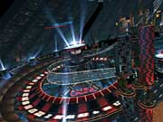
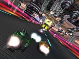
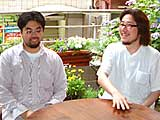
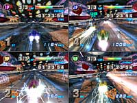

|
N.O.M 難易度なんですが、上のほうのレベルを見るとかなり厳しいように見えますね。 |
|
阪本 すごく厳しいですよ。それだけで三ヶ月はもつんじゃないかと(笑)。 |
| |
|
N.O.M コースなんかも「これは無理だよ！」みたいに見えるサーキットがありましたが(笑)。 |
|
阪本 それがですねえ、走れるようになるんですよ。ヒトはびっくりするくらいに、上手くなっていくものなんですよ(笑)。
今村 これはレースゲームの形をしていますが、実はマリオみたいなアクション要素もあって、"ハイスピードアクションゲーム"というようなノリでもあるんですね。いかにジャンプしてショートカットしていくか、とか。だからレースのようでいて、アクションゲームのような部分をたくさん感じてもらえると嬉しいですね。 |
| |
|
N.O.M このマシンを使えば絶対だいじょうぶ！ みたいなことはないんですか？ |
|
阪本 『F-ZERO』はマシンのセッティングを変えられるので、どのマシンを選んでも、セッティングいかんで走りが激変するんですよ。いままでは「このマシンしか速いのがない」と思っていた人が、セッティングを変更するとくつがえされちゃったりするわけです。
今村 これが市場に出ると、我々の想像を絶する記録やカスタムマシンが出てくることが楽しみですね。
阪本 作った側としては「どういう結果になっているのか」を見るのが楽しみではありますね。 |
| |
|
N.O.M 開発として参加されているかたが実際にプレイしてみて、特に「これがおもしろい！」と思えるような部分はどこなんでしょう。 |
|
今村 対戦はかなり盛り上がると思いますよ。
阪本 僕らはタイムアタックで熱くなっていますね。
今村 僕は『F-ZERO X』のときはえんえん対戦ばかりしてましたよ。スタッフどうしで(笑)。
阪本 なぜかみんな、ムキになるんですよね…。僕が「このマシンは速すぎるから、バランスを調整するために性能を落とせ」って言うと、それを使って速いタイムを出していた人がすごく怒るんですよ。「なんで下げるんですか！ せっかく極めたのに！」と(笑)。で、「このマシンは遅すぎるから、性能を上げよう」って話をすると、「いままで自分がこっちのマシンで完璧な走りをしていたのに、このマシンの性能を上げたらあっさり抜かれたじゃないか！」と怒ったりするわけです。単なる個人的な主張なんですが(笑)。 |
| |
|
N.O.M 私が実際にプレイしてみたら、ブーストの加速がやっぱり気持ち良かったですよ。 |
|
今村 『AX』のほうにはブーストボタンがふたつあって、中央の大きいブーストボタンをガガガガガ！ って連打するのが楽しいんですよ。「あたらしいプレイスタイルや！」ってことで(笑)。割れるんちゃうか、っていうくらいに連打しまくるんです。
阪本 最初は右手親指で押せるほうの、小さいブーストボタンはなかったんですよ。ステアリングの中央にある、大きいブーストボタンだけだったんです。でもそれをするとステアリングから手が離れてしまうので、手元にもブーストボタンをつけようということになって。最初に中央のボタンしかついてない状態でやっていたときは、社内のあちこちで「ガガガガガガガガガガガガガガガ!!」っていう、すごい音がしてて(笑)。ゲームセンターに、叩いて競うゲームとかあるじゃないですか。アレじゃないの？ ってくらいの勢いで、みんな連打しまくりだったんです(笑)。
今村 あれはね、やってると楽しいんですよ(笑)。
阪本 スタッフには、いまだに真ん中を押す人がいますよ。すごいむずかしいコースなのに、片手でハンドル切って、反対の手で「ガガガガガガガガガガガガ！」って(笑)。どうしても中央のブーストボタンを叩きたいらしくて。そうなってくると、ちょっとちがうゲームの匂いがしなくもないですが(笑)。 |
| |
|
N.O.M 『GX』ではそれがなくなって残念ですね(笑)。 |
|
阪本 じゃあ、なんかつけましょうか(笑)。 |
| |
|
N.O.M ブーストボタンとかいった要素はありますが、内容的にはあまりに複雑にならず、シンプルに楽しめると思うんですが。 |
|
今村 そうです。実は潰し合いのゲームだったりするんですよ。それをやらないと、なかなか総合一位にはなれなかったりするんです。
阪本 僕はピンポイントでそのマシンを潰せますよ。すごく離れてても、100％外さないです(笑)。三周で20台潰した人もいますし。スタッフ内でサイドアタックをやって潰した人がいて、「気持ちええわ〜！」って言ってたりしました。で、気持ちいいからってそればっかりやってるんですよ(笑)。
今村 ハイレベルなクラスをやっていると、その辺の潰し合いが重要だし、おもしろい要素なんですよ。プレイヤーがそれぞれ身につける独特の遊び方もありますし、その辺の駆け引きはコンピューター対戦でもかなり熱いですよ。 |
| |
|
N.O.M 攻略や楽しみかたのポイントは、どういう部分にありますか？ |
|
阪本 まずコースを熟知することです。これはレースゲームのセオリーですね。あとはマシンの挙動のクセを読むことです。マシンも重量がさまざまで、たとえば軽いマシンだと加速がいい上に、よく曲がる。重いマシンだと、加速が悪くて曲がるときもゆっくり。マシンは『F-ZERO X』のときにあった30台と、あたらしく作ったのが11台で、種類がとても多いんです。だいたいほかのレースゲームっていうと、性能格差なんていうのはどんぐりの背比べみたいなものなんですが、今作はマシンの個性を楽しむというか。ブーストの威力や継続時間なんていうのも、個性をつけているんです。なので、最初はちょっと「ん？」と思うところもあるかも知れませんが、そのクセが逆に良さになっていくんじゃないかと思いますね。コースによってはそれが効いてきたり、それを見つけるのがおもしろくなっていったりしますよ。 |